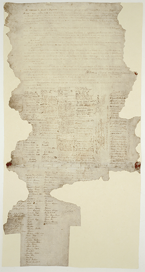

Our Past
New Zealand has a short historical background compared to other countries. While New Zealand is now considered a relatively safe, peaceful place to live, it wasn't always this way. Like many places around the world there has been conflict and turmoil, strife and triumph.
Historical Timeline
-
1280
-
Polynesians Settled NZ
It was around this time the first people arrived in New Zealand from Eastern Polynesia, their descendants became the Māori culture.
-
1500
-
The Moa Became Extinct
Due to hunting this large flightless bird was pushed to extinction.
-
13th December, 1642
-
Abel Tasman Sighted NZ
The Dutch explorer was the first European to sight New Zealand.
-
6th October, 1769
-
Captain Cook circumnavigates NZ
The first European explorer to circumnavigate and map New Zealand
-
Late 1700s
-
Settlers arrive in NZ
Sealers and whalers begin to arrive, along with regular visits by explorers, sailors, missionaries, traders and adventurers.
-
6th February, 1840
-
The Treaty of Waitangi
Treaty of Waitangi was signed between the Crown and Māori chiefs, NZ became a part of the British Empire and supposedly Māori were given equal rights to the British colonists.
-
19th September, 1893
-
Women's Suffrage
After 20 years of campaigning, NZ became the first self-governing country in the world to give women the right to vote. This movement was led by Kate Shepard.
-
1914-1918
-
WWI
110,000 New Zealand men were conscripted. On the 25 April, 1915 was the Gallipoli landing, our troops fought alongside the Allies and Australia and NZ suffered 7,991 casualties.
-
3rd February, 1931
-
The Napier Earthquake
New Zealand's deadliest natural disaster. 256 were killed, thousands injured and widespread damage to the Hawke's Bay region.
-
1939-1945
-
WWII
New Zealand joined the war alongside Great Britain to defeat Nazi Germany. 140,000 men and women served, 11,928 fatalities occurred.
-
1973
-
Britain Joins The European Economic Community
The loss of our biggest export market, Britain. From the 1890s, the economy had been based almost entirely on the export of frozen meat and dairy products to Britain. New Zealand was forced to seek out other markets and in part this redefined the country.
-
1997
-
New Zealand's First Female Prime Minister
Jenny Shipley became first female PM in New Zealand with National Party.
-
1999
-
Helen Clark Became Prime Minister
Helen Clark led the Labour Party to victory - social reforms were created including reducing the government's restrictions on the market, more protection for workers and abolishing student loan interest payments. Labour remained in government for 9 years.
-
2008
-
John Key Becomes Prime Minister
John Key led the National Party to victory. The Key government implemented a GST rise and personal tax cuts, they increased the minimum wage but not as much as the Labour Party. John Key stepped down in 2016 after 9 years in government.
-
22 February, 2011
-
Christchurch Earthquake
Christchurch earthquake caused major destruction, thousands of injuries and 185 deaths.
-
12 December, 2016
-
Bill English becomes Prime Minister
Bill English takes over from John Key as Prime Minister of New Zealand with the National Party, following the dropout of his opponents Judith Collins and Jonathan Coleman.
The Treaty of Waitangi
British migrant settlers were arriving around the late 1830's en masse, there were large-scale land transactions with Māori, unruly behaviour by some settlers and signs that the French were interested in annexing New Zealand. The British government was initially unwilling to act, but it eventually realised that annexing the country could protect Māori, regulate British subjects and secure commercial interests.
On the 6th February, 1840 the Treaty of Waitangi was signed between the British Crown and 540 Māori rangatira (chiefs), bringing New Zealand into the British Empire and giving Māori "equal rights" with British citizens. The Treaty is a broad statement of principles on which the British and Māori made a political compact to found a nation state and build a government in New Zealand.
In the English version of the Treaty, Māori cede the sovereignty of New Zealand to Britain; Māori give the Crown an exclusive right to buy lands they wish to sell, and, in return, are guaranteed full rights of ownership of their lands, forests, fisheries and other possessions; and Māori are given the rights and privileges of British subjects.
The Treaty was sent around the country for the Māori chiefs to sign, although many were uncertain, others refused and some did not get the chance to sign. The Colonial Office in England later declared that the Treaty applied to Māori tribes whose chiefs had not signed. British sovereignty over the country was proclaimed on 21 May 1840.
There is controversy surrounding the Treaty, that the Māori translation does not reflect the same meaning as the English version and that the Crown did not uphold their end of the deal in regards to giving iwi full rights to their lands. The Treaty is not considered part of domestic law, but often it is referred to in the 'spirit' or intention of the Treaty.